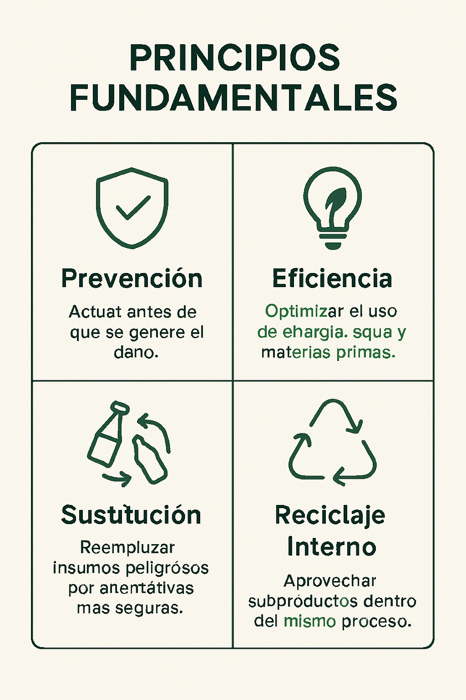

Tópicos de Producción Más Limpia
Tema 1 – Concepto de Producción Más Limpia
La Producción Más Limpia (PML) es una estrategia ambiental preventiva que busca reducir los impactos negativos desde el origen del proceso productivo. A diferencia de los enfoques tradicionales que se centran en el tratamiento de residuos, la PML actúa antes de que estos se generen.
Tema 2 – Principios Fundamentales
Los principios de la PML se centran en la prevención, la eficiencia y la sustitución de insumos peligrosos. La prevención implica anticiparse a los problemas ambientales antes de que ocurran. La eficiencia busca optimizar el uso de recursos como agua, energía y materias primas, reduciendo costos y emisiones.

Tema 3 – Beneficios Ambientales y Económicos
La PML ofrece beneficios ambientales claros, como la reducción de emisiones contaminantes y la disminución de residuos sólidos. En el plano económico, las empresas que aplican PML reducen costos operativos gracias al menor consumo de recursos y al aprovechamiento de subproductos.
Tema 4 – Herramientas y Técnicas de PML
Entre las herramientas más utilizadas se encuentran las auditorías ambientales y los diagnósticos de procesos, que permiten identificar oportunidades de mejora. Las técnicas incluyen la implementación de tecnologías limpias, el rediseño de productos y la aplicación de buenas prácticas de mantenimiento y operación.
Tema 5 – Implementación en la Industria
La implementación de la PML sigue un proceso estructurado: diagnóstico inicial, identificación de oportunidades, evaluación técnica y económica, aplicación de medidas y seguimiento. Este proceso requiere el compromiso de la gerencia y la participación activa de los trabajadores.
Tema 6 – ¿Qué establece la ISO 10628?
La ISO 10628 es una norma internacional que establece las reglas para la elaboración de diagramas de flujo de procesos en ingeniería química e industrial. Su aplicación en PML facilita la identificación de puntos críticos dentro de procesos productivos.
Tema 7 – Aplicaciones y ejemplos
Proximamente.
Tema 8 – Manejo de sustancias peligrosas
Continuará.
Tema 9 – Casos prácticos
etc.
Tema 10 – Cierre
Gracias por leer.